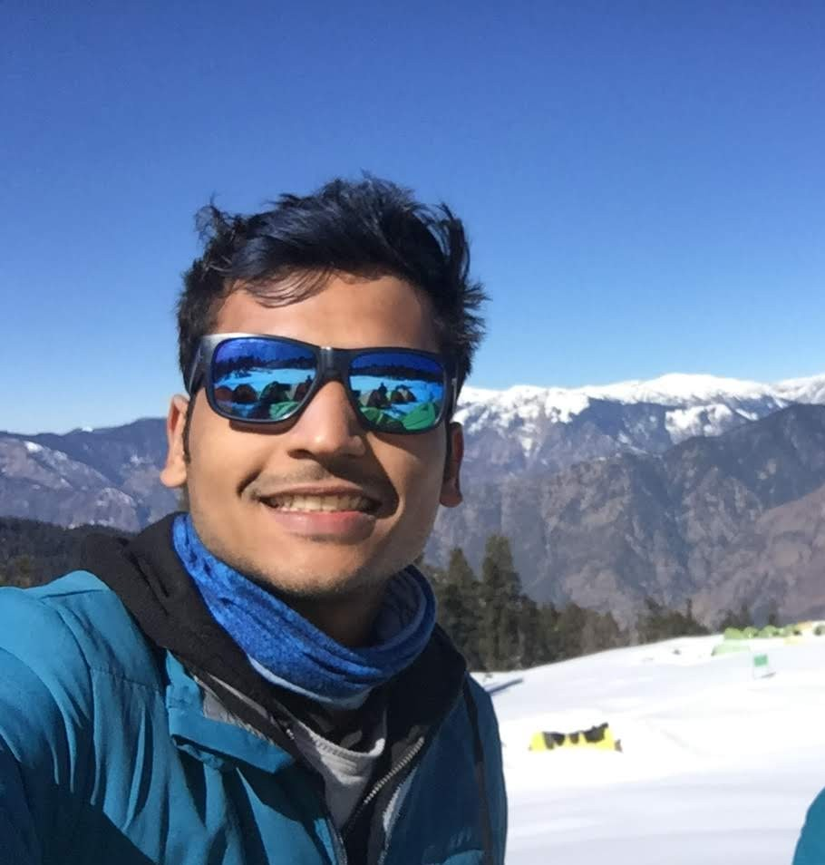

FOUNDER // Urban Rasoi — corporate kitchens, Kolkata. i feed people for a living.
BORN 1995.03.01ASCENDANT SCORPIOBASE KOLKATASTATUS BUILDING
scroll

FIG.01 // operator
// 01 — the work
01 · identity
I feed people.
i build and run corporate cafeterias — the unglamorous engine rooms where a
workday gets its breakfast, its lunch, its 4 o’clock chai. honest work.
i’m quietly proud of it.
02 · operations
What runs.
FN_01 / reliability
a hot meal, every weekday. on time. that’s the whole job.
FN_02 / people
a kitchen is a team. i’d rather be the one who looked after them than the one who only scaled.
FN_03 / craft
logistics, hygiene, costing. the same dal tasting right on a tuesday as it did on monday.
// 02 — lunar log
Phases of a journey.
the moon waxed and waned with my fortunes — new at every fall, full at every peak. each moon below is a chapter — tap one to read it.
—
—
—
—
// timeline · 12 phasesclick any moon to read it →
// 03 — constants
Non-negotiables.
Pride
the quiet kind. a thing built well, a promise kept. lights on, food out, people fed.
Humility
i remember every version of me that didn’t have this yet. memory, kept honest.
Faith
i read the sky a little. it keeps me patient, and it keeps me small under something larger.
// 04 — lineage
Family tree.
two houses, two routes, one present node. mapped as memory, inheritance, and signal.
current node
Subham Kanoi
youngest child · lineage in focus
open ancestral branches
paternal grandparents
Late Ram Niwas Ji Kanoi & Late Ram Pati Devi Kanoi
5 children · 2nd eldest: Om Prakash Kanoi
maternal grandparents
Late Niranjan Lal Shah & Mrs. Shah
3 children · eldest: Kiran Kanoi
open parents
father
Om Prakash Kanoi
2nd eldest child
mother
Kiran Kanoi
eldest child
parents
Om Prakash Kanoi & Kiran Kanoi
3 children
eldest: Vandanamiddle: Yogeshyoungest: Subham
open children
child 01
Vandana Kanoi
sibling
child 02
Yogesh Kanoi
sibling
child 03
Subham Kanoi
youngest · current node
// 05 — open briefs
Someone, build this.
stray ideas that won’t leave my head. i don’t have time to build them — i wish you would. take any one — no permission, no credit needed.
0 signals · all unclaimed · up for grabs
// 06 — uplink
Open channel.
food, work, kolkata, or the stars. the door stays open.